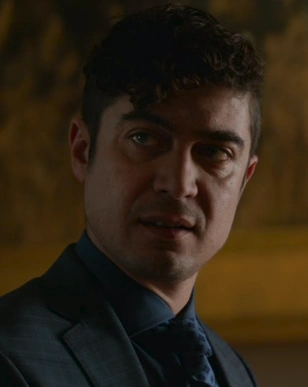
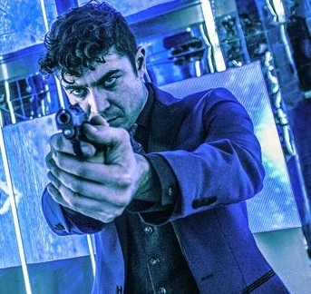

Santino
"Listen to me. What is this? Hmm? Do you remember? This is your blood. You came to me. I helped you. If you don't do this, you know the consequences."
"잘 들어. 이게 뭔지 알아? 응? 기억나? 이건 네 피야. 네가 나한테 왔었지. 내가 도와줬어. 하지만 이걸 하지 않으면 어떤 일이 일어날지, 너도 알잖아."

Santino
성별: 남자
국적: 이탈리아
직업: 카모라, 하이 테이브르이 리더이자 범죄조직의 지도자
소속: 카모라, 하이 테이블
관계: 지아나 단토니오(자매)
상태: 죽음
